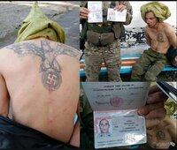
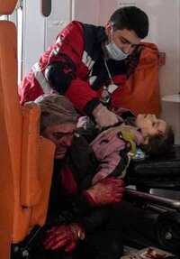
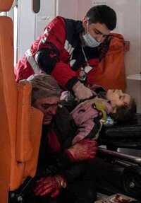

Задумайтесь и ответьте на несколько вопросов.
- Почему люди в России лишились:
- независимого телевидения
- доступа в социальные сети и на сайты независимых СМИ
- свободы слова о т.н. "спецоперации"
- Почему ФСБ и Росгвардия арестовывает людей за мирные протесты против войны?
- Почему на свободе не осталось никого из оппозиции?
- Почему качество жизни в Украине так отличается от российского?
Ответ прост: российское правительство во главе с В.В. Путиным искажает факты о реальном военном положении дел в Украине блокируя ВСЕ зарубежные и оппозиционные медиа на территории РФ. Обворовывая простое население России, военно-политическая верхушка строит себе дворцы и покупает яхты, объедая даже ВОЕННУЮ отрасль, на которой часто любит спекулировать. Демократия и свобода слова невиданны российскому народу; а многие российские солдаты удивляются качеству жизни даже в небольших районных центрах Украины.
Мифы от российской пропаганды
- Власть в Украине узурпирована нацистами
- Украинцы ждут российских миротворцев и освободителей
- Это не война, а спецоперация
- Целью РФ не является мирное население Украины
- НАТО угрожает России
- Войска РФ помогают украинскому мирному населению
- Это война с НАТО
- Русофобия как главная причина санкций от Запада
- Российские солдаты героично сражаются в Украине
- Фото/видео с Украины - фейк и искажение фактов
- Украинцы неоднократно атаковали свои объекты чтобы впоследствии обвинить Россию
Нацистов в Украине нет: там даже президент - еврей.
Тысячи украинцев протестуют в оккупированных городах против российских вооруженных сил, вторгнувшихся на территорию Украины.
Это самая настоящая ВОЙНА. Cмотреть ниже и в галереe.
Российские войска УБИВАЮТ мирных жителей. Многочисленные случаи пыток и изнасилований российскими солдатами задокументированы иностранными независимыми агентствами.
НАТО основан с целью ЗАЩИТЫ Европы от советского влияния, а не для расширения своих границ. Единственная причина, по которой НАТО до сих пор существует - это российская агрессия по отношению к Молдове, Чечне, Грузии, и с 2014 года - к Украине (детали тут и тут)
Российские войска мародерят в оккупированных населенных пунктах, вынося из домов сбежавших мирных жителей все от бытовой техники до белья и одежды. Также ВС РФ неоднократно обстреливали гуманитарные конвои и зеленые коридоры, предназначенные для эвакуации мирного населения и доставки продуктов питания в оккупированные города.
НАТО не учавствует в войне - контингент альянса не находится на территории Украины и не принимает участия в боевых действиях.
Настоящая причина санкций - это открытое вторжение РФ на территорию Украины и военные преступления, совершенные ВС РФ против мирного населения Украины.
Нет, сражаются они посредственно, о чем свидетельствуют измененные на ходу планы военного командования РФ. Впрочем, солдаты "героично" убивают и насилуют девочек на глазах у их матерей, убивают мужей на глазах у их жен, и выносят из квартир ВСЕ имущество временно сбежавших от войны украинцев (включая стиральные машинки, микроволновки и ковры), при этом бросая тела погибших товарищей на поле боя.
Все фото- и видеоматериалы о резне в Буче, а также убийствах мирных жителей в Чернигове, Сумах и Мариуполе зафиксированы множеством независимых корреспондентов и очевидцев. Все попытки манипулировать фактами опровергаются достаточно легко, как, к примеру, фото Рамзана Кадырова из якобы "Киевской области", сделанные на заправке Роснефти (которых в Украине не было и нет).
Одно из наибольших заблуждений на этой войне. Напротив, РФ часто заявляет, что атаковала военный объект, а потом заявляет что атака была проведена украинскими вооружёнными силами по собственной инфраструктуре. В современном цивилизованном мире нет никого, кто был бы способен на подобное - это нападение на собственную семью, друзей и соседей. Похоже, с российскими властями что-то не так, если они действительно так думают. Доказательства всегда противоречат поднобным провокациям.
Военные преступления РФ
- Россия ипользует запрещенное Женевской Конвенцией оружие массового поражения:
- Кассетные бомбы
- Фосфорные бомбы
- Тяжёлые огнеметные системы
- РФ проводит бомбардирование:
- больниц и родильных домов
- школ и детских садов
- церквей
- гражданской инфраструктуры
- Солдаты РФ сознательно уничтожают мирное население Украины - это геноцид
- более 400 человек из мирного населения в Буче и других населённых пунктов Киевской области (на момент 04.04.2022)
- многие из них были подвержены пыткам и убиты выстрелом в затылок, с завязанными за спиной руками
- многие изнасилованы (в т.ч. 10-летние девочки)
- многие трупы попытались сжечь; некоторых переехали тяжелой техникой
- убиты даже домашние животные.
Обращение к россиянам
24 февраля 2022 года наша с вами страна напала на соседнее суверенное государство и развязала братоубийственную войну с самой близкой нам нацией - украинским народом. Путинская пропаганда откровенно лжет вам о целях и намеренно скрывает факты этой ужасной “спец. oперации”. Города Харьков, Мариуполь, и пригороды Киева полностью разрушены бомбежками. Мирные жители, в том числе дети, гибнут каждый день, поскольку наша армия намеренно наносит удары по многоэтажнам домам, школам, детским садам, и другим невоенным объектам.
По данным ООН, четыре миллиона украинцев сейчас являются беженцами в соседних странах. А из тех кто остался в стране, десять миллионов покинули свои дома и должны жить в убежищах, и даже эти убежища обстреливаются ракетами и бомбами. Это самый большой миграционный кризис со времен Великой Отечественной войны! В это трудно поверить, но это факты, которые вы можете найти на любом сайте новостей за пределами России.
В России больше нет честной и объективной информации - Кремль и все гос. каналы, включая Первый, лгут вам, а независимые от Кремля источники заблокированы. Если вы знаете кого-то у кого есть родственники, друзья или просто близкие люди живущие в Украине или служащие в Российской армии - поговорите с ними, спросите что им известно. Если у вас есть родственники или друзья в Украине или есть в семье срочники, контрактники или профессиональные военные служащие Российской армии и вы знаете информацию из первых рук - пожалуйста делитесь ею со своими знакомыми.
Сегодня без VPN получить доступ к независимым новостям в России просто невозможно. Поэтому Вы – единственный ресурс правдивой информации для многих ваших соотечественников. Россияне должны знать правду, должны понимать, что власть в стране захвачена бандой военных преступников. Путинская стратегия захватить Украину за три-четыре дня полностью провалилась потому что не была готова к такому сопротивлению. Вся Украина встала на защиту своего Отечества. Российская армия, деморализованная и погрязшая в коррупции, совершенно не готова воевать: наши солдаты - это пушечное мясо. Их бросают как дрова в топку – без жалости и сожаления.
Посмотрите это интервью с Валентиной Мельниковой, секретарем Союза комитетов солдатских матерей России.
^Вернуться к началу страницы^
Как помочь
- Распространите эту информацию среди своих друзей, родных, знакомых, кого угодно!
- Официальные реквизиты для гуманитарной помощи пострадавшим
- Склонируйте эту страницу на GitHub, создайте свою собственную копию для обхода цензуры: https://github.com/omegawillend/the-truth
Ссылки
- 1920.in: онлайн-инструмент для распространения правды о войне
- supportukraine.org.ua
- Twitter Oryx : Полный список задокументированных потерь с обеих сторон
- военные преступления россии : Больше фотографий и доказательств военных преступлений
- интервью с крымскими татарами
Галерея

Потери ВС РФ на момент 04.04.2022

Харьков до и после "освобождения" 
Русский солдат с татуировкой свастики


 

Смотреть далее..